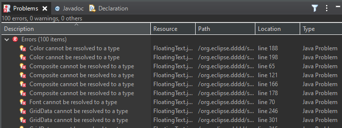

Platform Changes
Currently ImageDescriptor automatically provides higher DPI images if a
resource exits that ends with @x2 or @1.5.
This can rapidly increase the number of images required if multiple resolutions are used as there are duplications (e.g. 16x16@2x is the same as 32x32 icon). The second limitation is that only two fixed zoom levels are supported at the moment.
It is now possible to use an alternative naming scheme where icon resources are organized in folders holding the resolution in folder-name (e.g. icons/16x16/icon1.png, icons/32x32/icon1.png and so on). This also has the advantage that it is possible to use other scaling factors beside the 150/200% that are currently supported.
Previously it was possible to split a IProgressMonitor using SubMonitor class, while this works good in a linear workflow, it does not work well in distributed flows where each item wants to report progress independently.
Another drawback was, as the original progress monitor has no way to know about the split, it's not possible to handle this in a user-friendly fashion. For e.g. it was not possible for a User-Control to show the progress independently.
To overcome this limitations a new way of slicing a monitor was added IProgressMonitor#slice(int work) with the following properties:
- slice is default implemented with a very basic slicing facility that can be overriden by implementations if required
- the returned monitor behaves as if one has created a fresh instance with the given amount of work (that implies that the caller of slice(...) is responsible to call "done" on the returned monitor if no longer needed)
- whenever a full work unit is reported on the slice it is propagated to the parent
- it is safe to use slices in another thread
- it is possible to create more than one slice without influence on the others
For further details on usage, check the javadoc of the new method.
Previously IAdapterFactory has to be registered via plugin.xml, this has the disadvantage that one has to keep code with xml in sync (e.g. the adapter classes has to be provided in xml and in the IAdapterFactory.getAdapterList()). Also the code is bound to the static Extension Point Model that means that it has to gather all necessary dependencies from external (static) sources as there is no injection mechanism available.
From now on it is possible to also register an OSGi Service for this purpose and thus can take advantage of Declarative Services for example or even specialized construction and registration with plain OSGi mechanism.
The service must only supply a string property (or even multiple ones) with IAdapterFactory.SERVICE_PROPERTY_ADAPTABLE_CLASS that promotes the types that can be adapted.
The code then activates the service upon first request of the adaptation of adaptable class and calls IAdapterFactory.getAdapterList() to find out the adapter classes.
If even more laziness is required a list of adapter classes can be declared via the IAdapterFactory.SERVICE_PROPERTY_ADAPTER_NAMES service-property and the activation of the service will even be further delayed to the point where an actual adaptation of adaptable class for one of the static available types is requested.
org.eclipse.jface.dialogs.IDialogSettingsProvider is a new interface
to describe classes that are responsible for loading and saving IDialogSettings.
Clients can now provide a central place to manage dialog settings.
PlatformUI.getDialogSettingsProvider(Bundle) has become the central place
for getting bundle based dialog settings.
All methods in AbstractUIPlugin dealing with dialog settings have been deprecated.
CompositeFactory now supports the usage of a layout supplier for each new composite.
CompositeFactory.newComposite(SWT.NONE).supplyLayout(GridLayoutFactory.fillDefaults()::create).create(parentComposite);
DateTimeFactory is available to create DateTime widgets.
org.eclipse.jface.util.Util.isValid method allows to check if a widget is null or disposed.
org.eclipse.unittest.ui plugin.
It allows extenders to add support for reports and management of test executions in any test engine through
a common view, by adding an extension to
org.eclipse.unittest.ui.unittestViewSupport extension point for the specific test engine.
Extensions typically deal with receiving input from an ILaunch
(eg parse output or receive notifications through some protocol specific to the test engine) and to
populate the Test Session model with information about execution of the tests. Extensions also provide
some implementation of the typical UI actions available for a given test session: re-run a specific set
of tests, open file for a given stack element...).
The org.eclipse.unittest.ui plugin is currently not included in Eclipse Platform, SDK or
other products; it's available for installation from the Eclipse project p2 repository. Consumers would
typically need to include this bundle in there target-platform explicitly to provide an extension for
the Unit Test view.
Examples of consumers are:
org.eclipse.jdt.unittest.ui.jdtbundle which provides alternative launchers for JUnit, using the new Unit Test view for report- Corrosion plugin uses this Unit Test view to build support for Rust/Cargo test execution reporting, and
- CDT also has some experimental code to use this view for C/C++ test report instead of a specific view.
swt-lines-visible CSS property.
Here's how it looks when lines are disabled in the dark theme on Windows:

Tree, Table {
swt-lines-visible: false;
}
SWT Changes

On Windows 10, all the dark theme tweaks including the dark progressbar can be disabled using the
org.eclipse.swt.internal.win32.disableCustomThemeTweaks Java property.
For Example: add this VM argument in eclipse.ini or on the command line after -vmargs:
-Dorg.eclipse.swt.internal.win32.disableCustomThemeTweaks=true